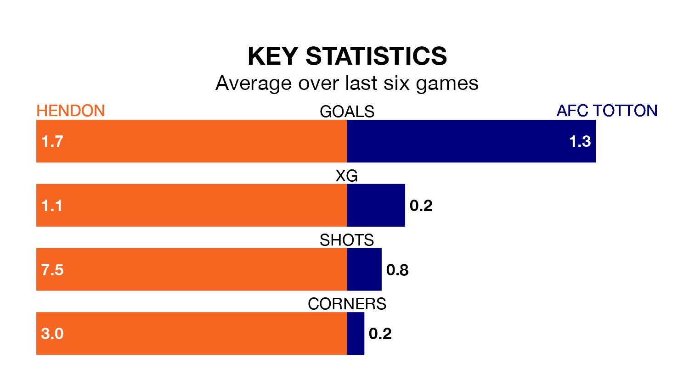

AFC Totton are strong favourites to take all three points despite Hendon's home advantage in Tuesday's late match at Silver Jubilee Park.
*Betting Company* are offering odds of 1.8 on Totton sealing the win, with the visitors sitting sixth in Southern League Premier South table.
Hendon, who are 11th in the league and six points behind Totton, are priced at 3.5 to win. A draw is set at 3.6.
With 50 goals in 25 games so far this season, Totton are scoring more than average in the league with 2.0 goals per game. And they are conceding fewer than average, letting in 30 goals at a rate of 1.2 per game.
Hendon, meanwhile, are average scorers, with 1.7 goals per game. They have conceded 1.5 goals per game.
The home team are in mixed form in Southern League Premier South, with two wins and a draw from their last six games.
With two wins and three draws over that period, the visitors' form is slightly better – they have taken nine points from 18, compared to Hendon's seven.
Hendon's last match was on Saturday, a 2-2 draw against Hanwell Town.
Totton drew 1-1 with Gosport Borough last time out, also on Saturday.
Updated: 09:21 (UTC), 30/01/24